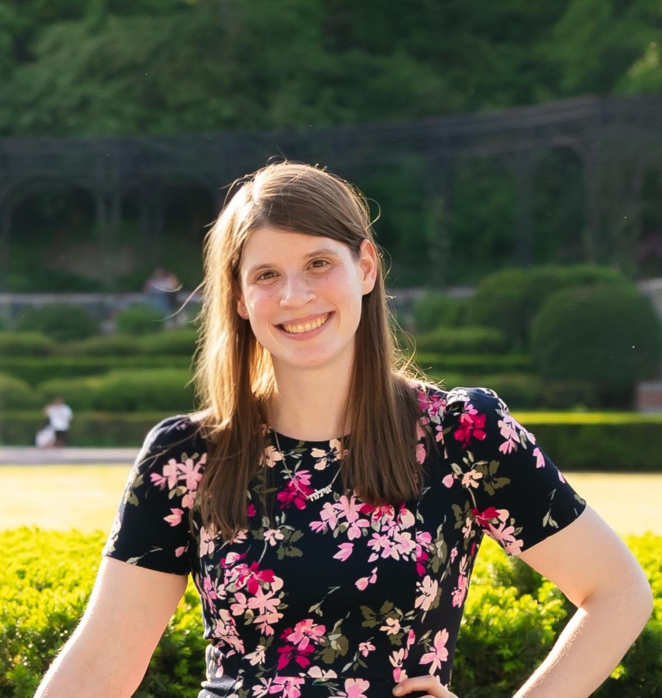
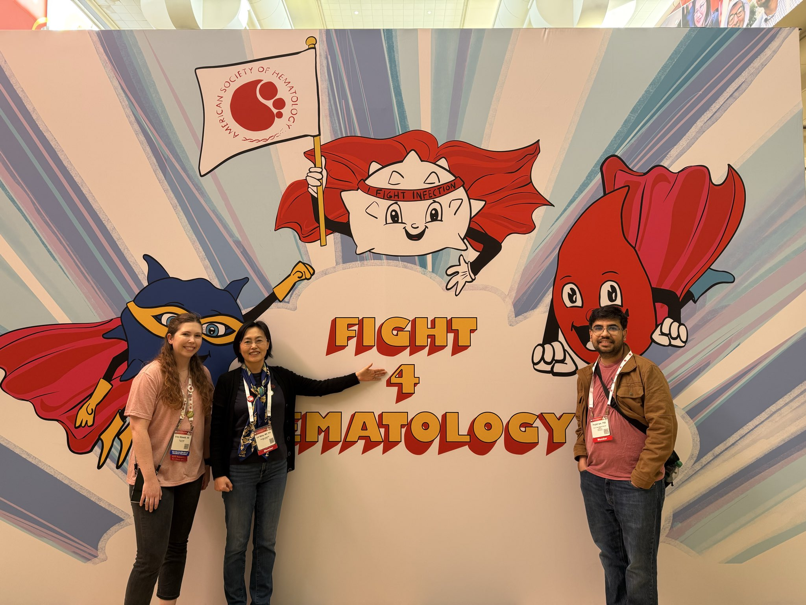
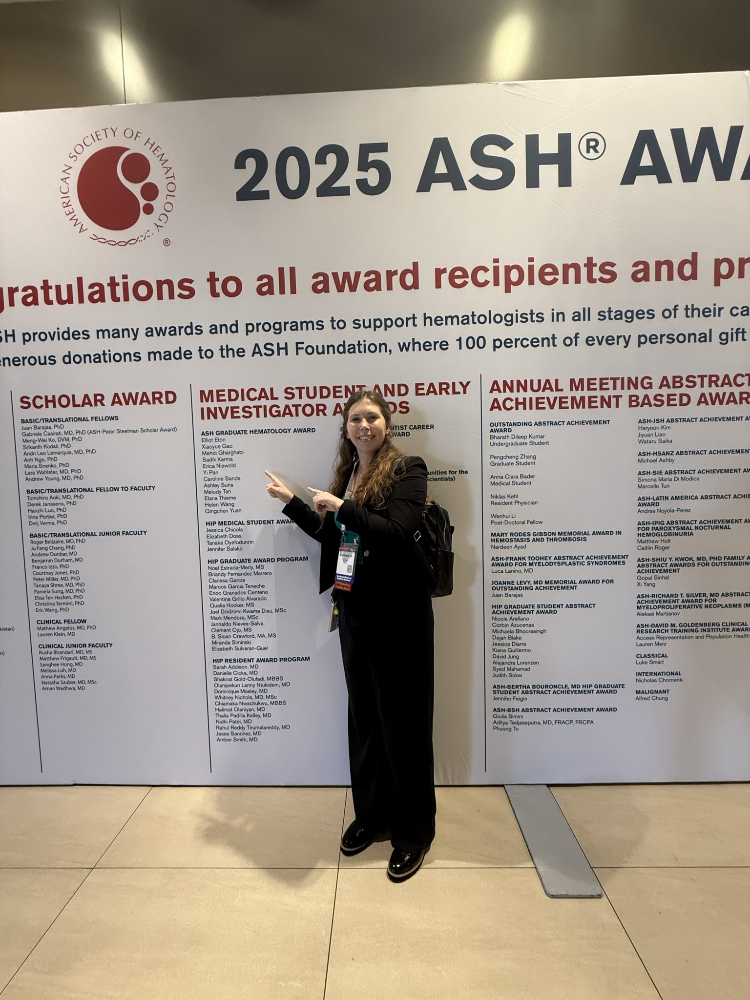
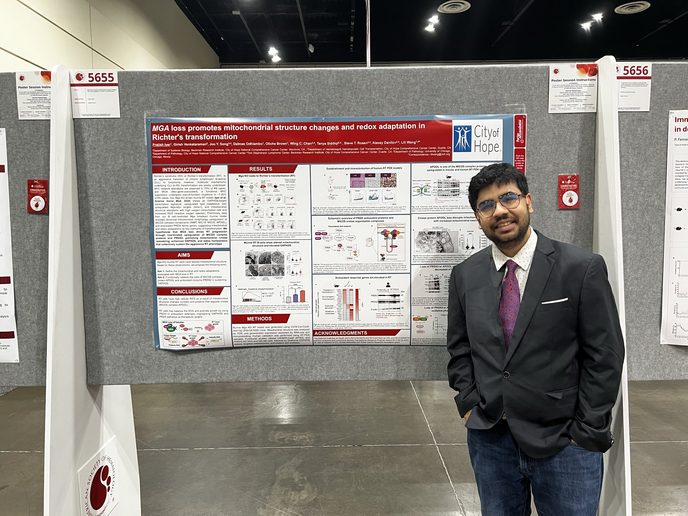
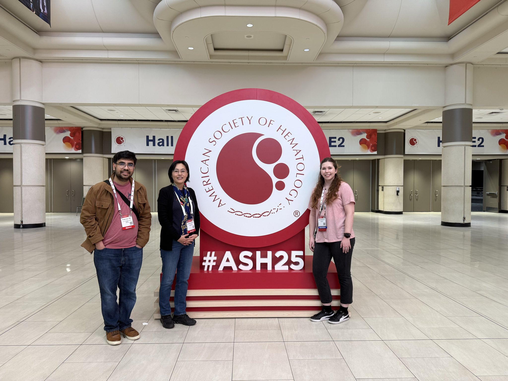
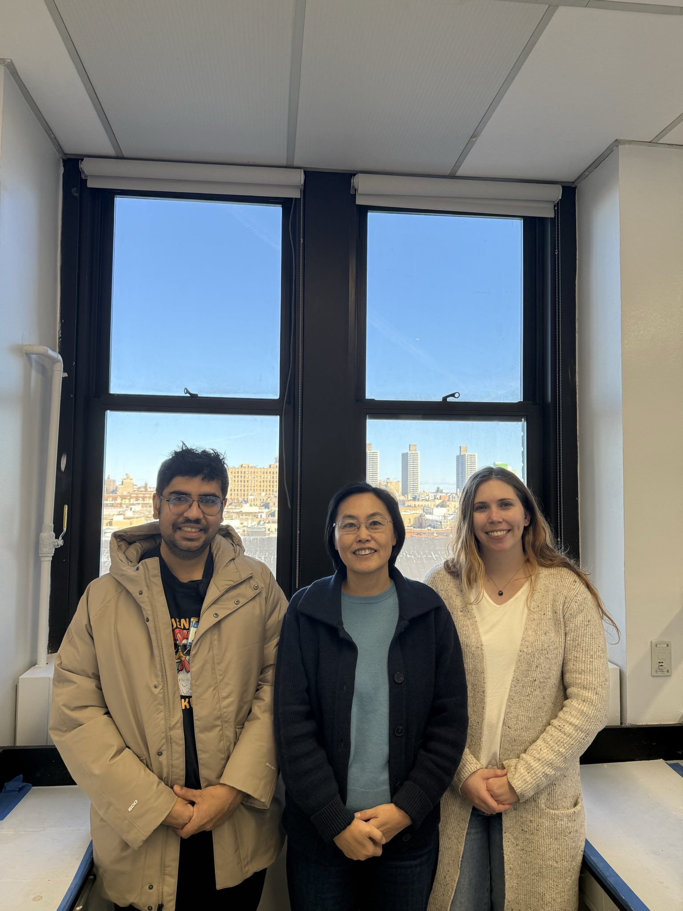
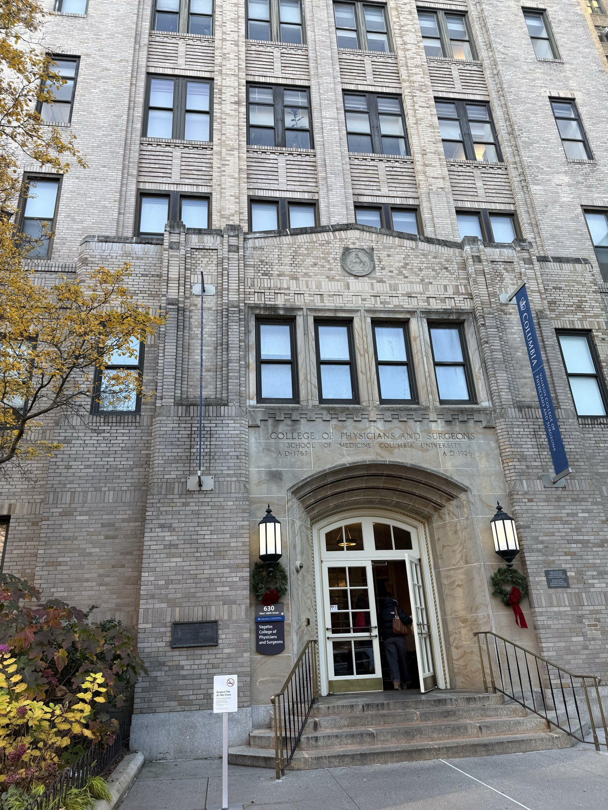

JUN 2026
We are delighted to welcome Xiaojie as a postdoctoral fellow, as well as our summer students, Alexandra and Matthew. Congratulations to Prajish on receiving his first pilot grant at Columbia—a wonderful milestone and a testament to his hard work and dedication. We look forward to the exciting discoveries ahead!


APR 2026
Happy New Year! The Wang Lab is excited to kick off 2026 with new projects and collaborations.
1. Welcome Ilana Karp joining us as a postdoctoral fellow!
2. Erica’s first talk at Columbia University!


DEC 2025
ASH 2025, Orlando, FL — The Wang Lab attended the American Society of Hematology (ASH) Annual Meeting & Exposition held in Orlando, Florida.




NOV 2025
Lili Wang Lab has officially relocated to Columbia University Medical Center in New York City. We are excited to start this new chapter!


Oct 2025 & Earlier ...
See our X account for more updates: https://twitter.com/LiliWangLab